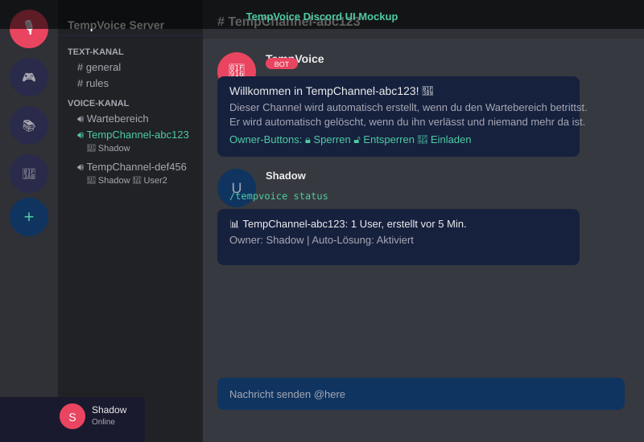
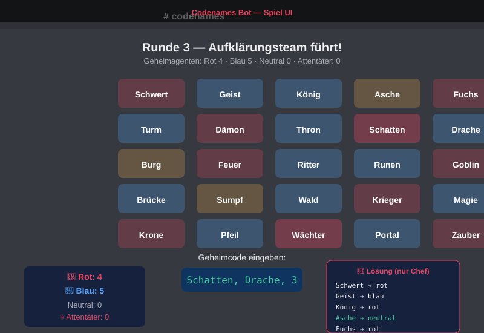

Meine Projekte
TempVoice
Ein Discord-Bot-Cog für temporäre Voice-Channels – wie bei den offiziellen Discord-Servern, aber als eigenständiger Bot. User erstellen private Channels einfach durch Betreten eines Wartebereichs.
- Automatische Channel-Erstellung beim Betreten
- Owner-Controls über Buttons (sperren, entsperren, einladen)
- Auto-Löschung wenn der letzte User den Channel verlässt
- Modernes Slash-Command-Interface

Codenames Bot
Ein Discord-Bot für das Wort-Raten-Spiel Codenames – direkt im Server. Mit Team-Chef-System, farbcodierten Wörtern, Attentäter-Mechanik und Lösungskarten per DM.
- 5×5 Wort-Gitter mit zufälliger Zuordnung
- Team-Chef-System über Discord Buttons
- Farbcodierte Wörter (Rot, Blau, Neutral, Attentäter)
- Lösungskarte per Direktnachricht für die Chefs

Campaign Manager
Ein Fullstack-Web-App für PnP-Spielleitende: Verwalte Campaigns, NPCs, Locations, Quests, Spieler und Session-Logs in einer einzigen Anwendung – mit voll funktionsfähigem Edit-Modus.
- CRUD für Campaigns, NPCs, Locations, Quests, Spieler und Session-Logs
- Flask-Backend mit SQLite-Datenbank
- Vollständiger Edit-Modus mit Vorausfüllen bestehender Daten
- Responsive Dark-Theme UI mit Brand-Farben